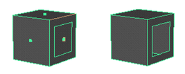
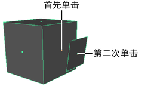
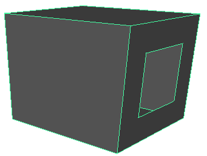
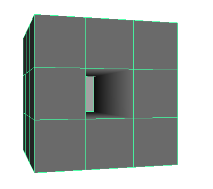
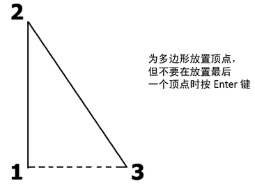
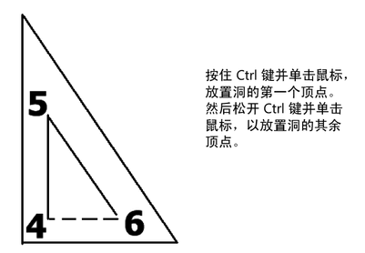
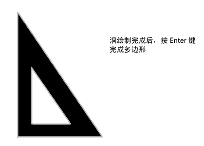
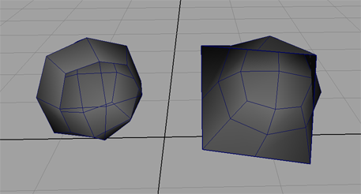

从外部面生成永久洞
您可以使用“生成洞工具”(Make Hole Tool)在选定多边形面中以其他面的形状创建洞。
在面上生成洞不会增加多边形模型中的面数或更改其顶点、边或面的组件索引。这在应用逐顶点颜色或导入外部多边形对象时尤为重要。

还可以在绘制时在面上生成洞。请参见创建带洞的多边形面。
在第二个面的图形中生成洞
- 选择“网格工具 > 生成洞”(Mesh Tools > Make Hole) >
 。
。 在“工具设置”(Tool Settings)对话框中，可选择设置洞与面的交互方式。请参见生成洞工具选项(Make Hole Tool Options)。
- 在要生成洞的面的中心单击面指示器。
- 在表示洞形状的面的中心单击面指示器。 
- 按 Enter 键以生成洞。 
也可以通过选择两边的面在单个对象中创建洞。

在绘制时在多边形中创建洞
- 选择。
- 在场景视图中，单击以放置多边形顶点，但请勿在放置最后一个多边形顶点时按 Enter 键。而是执行以下操作：
- 按住 Ctrl 键并单击以放置该洞的第一个顶点。
- 松开 Ctrl 键并单击以放置该洞的其余顶点。
- 绘制玩洞后，按 Enter 键完成多边形。 
还可以使用“生成洞工具”(Make Hole Tool)在现有面中生成洞。
使面不可见
也可以使面不可见，而不是在多边形中实际创建洞。如果需要在几何体中显示洞，同时又希望在使用细分操作（如“平滑”(Smooth)）时保持整体形状，该选项非常有用。
将面指定为不可见
- 选择要使其不可见的面。
- 选择“编辑网格 > 指定不可见面”(Edit Mesh > Assign Invisible Faces) >
 。
。
- 选择“指定”(Assign)。
- 单击“创建”(Create)。
面可能会消失，也可能不消失，具体取决于您的设置。如果不消失，请选择。
与几何体中的真实洞不同，处于“面”(Face)选择模式时，仍然可以在不可见面上选择并执行操作。如果细分网格（例如，使用“平滑”(Smooth)操作），则细分可确保该面仍然存在。
例如，下图显示了平滑之后的两个立方体。在进行平滑之前，对左侧立方体上的正面进行了设置使其不可见，而右侧立方体上相同的面已删除。

取消将面指定为不可见
- 选择要取消指定的面。
- 选择“编辑网格 > 指定不可见面”(Edit Mesh > Assign Invisible Faces) >
。
- 选择“取消指定”(Unassign)。
- 单击“创建”(Create)。
以前指定的任何不可见面将重新可见。